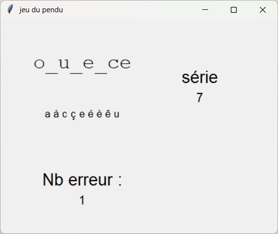

Les Minis Jeux#
Voici un projet aillant pour but de repertorier en une application plusieurs petits jeux avec Tkinter.
jeu du pendu#
-

source : personnelle -
Le premier jeu est simplement celui du pendu dont voici actuellement l’interface
jeu de piano#
En contruction !
Ce jeu est actuelement en contstruction
Une application avec pyinstaller#
pyinstaller est un module python permettant de créer un executable à partir d’un projet python. Ce procéder permet de lancer notre application sur d’autre ordinateur n’aillant pas préalablement python d’inatallé